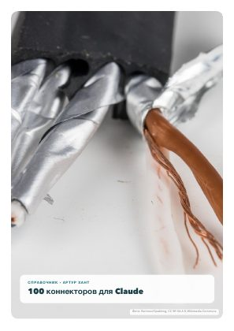
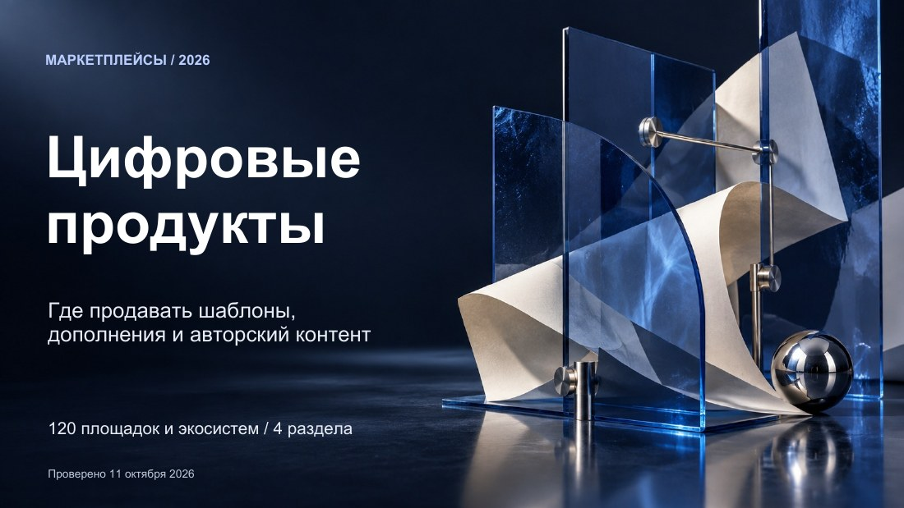
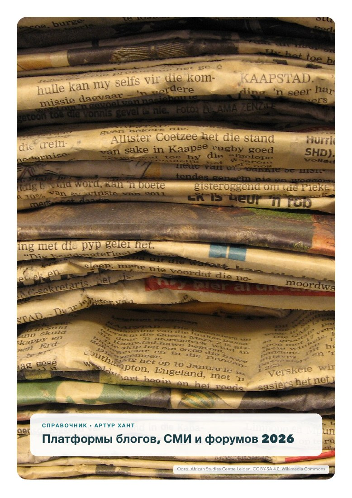

Нашёл. Проверил. Оформил в документ. Внедрил.
Техспец, ресёрчер и методист в одном лице. Один специалист вместо трёх фрилансеров — для вашего курса, блога, подкаста или онлайн-школы: беру на себя технику, нейросети и поиск информации. А чтобы вы увидели, как я работаю, — бесплатная библиотека из 28 справочников.

🤝 Один специалист вместо трёх фрилансеров
Для блогеров, авторов подкастов, экспертов, преподавателей, онлайн-школ, площадок онлайн-курсов, лекториев, школ и вузов. Разовая задача или постоянно в вашей команде — удалённо и без созвонов.
🔎 Найду и проверю информацию
Факты, исследования, статистика и примеры для уроков, выпусков и постов — из открытых источников, со ссылками и датой проверки.
🧰 Подберу сервисы и источники
Платформы для курсов, ИИ-инструменты, книги, видеокурсы, базы знаний — сравню по понятным критериям под вашу задачу.
🤖 Создам материалы с нейросетями
Гайды, чек-листы, шпаргалки, справочники и задания для учеников. Нейросети ускоряют работу, а проверяю всё я.
📊 Соберу дашборд или сравнительную таблицу
Информационная поддержка для управленческих решений: варианты, критерии, веса и понятный вывод.
🖥️ Сделаю презентацию
Структура, текст и аккуратная вёрстка на готовом шаблоне — без индивидуального дизайна.
🎬 Напишу текст речи или сценарий Reels/Shorts
Текст выступления или короткого видео: зацепка, главная мысль и призыв к действию.
⚙️ Настрою техническую часть
Сайт и страницы, ссылка-визитка для соцсетей, платформа курса, рассылки. Поддержу, если что-то перестало работать.
Как я работаю — на примере одного справочника
28 секунд: одна цифра из справочника — откуда она, как проверена и как справочник приводит клиентов.
С чего начать
Выберите тему, которая нужна сейчас. Каждая страница справочника устроена одинаково, поэтому через десять страниц вы читаете его как таблицу.
🤖 ИИ на практике
Навыки, коннекторы и выбор между локальной и облачной моделью.
Открыть → 1 материал🔒 Приватность ИИ
Что сервисы хранят, на чём учатся и где это выключить.
Открыть → 4 материала🎓 Учёба и карьера
Заочное обучение, экзамены и сертификации.
Открыть → 1 материал💻 Цифровые навыки
Порядок на Mac и полезные программы.
Открыть → 5 материалов✍️ Автору и бизнесу
Площадки, маркетплейсы, платформы и налоги.
Открыть → 3 материала🎬 Кругозор
Кино, книги и проверка убеждений на прочность.
Открыть →Лучшее для начала
Хороший вход в библиотеку: приватность нейросетей, навыки и коннекторы ассистентов, заочное обучение и площадки для авторов.
 Приватность ИИ
Приватность ИИ
Приватность ИИ-сервисов — 6 шпаргалок
ChatGPT, Claude, Gemini, NotebookLM, Perplexity и ElevenLabs: что хранят, на чём учатся и где это выключить.
 ИИ на практике
ИИ на практике
Claude Skills — 142 сценария
142 навыка, на каждый — 2 страницы: готовые просьбы, установка, польза и риски. Разделы для 6 групп читателей и что важно знать в России.

ИИ на практикеClaude Connectors — 100 интеграций
Как подключить ассистента к заметкам, почте, задачам и GitHub, какие права давать. Разделы для 6 групп читателей и российские аналоги.
 Учёба и карьера
Учёба и карьера
Заочное и дистанционное обучение. Выпуск 1
Психология, библиотечное дело, журналистика и медиа: программы ведущих государственных вузов 13 городов.

Автору и бизнесуМаркетплейсы цифровых продуктов — 120 площадок
Где продавать шаблоны, курсы, электронные книги и авторский контент.

Автору и бизнесуПлатформы блогов, СМИ и форумов 2026
26 издательских платформ и 12 форумных систем по 20 критериям с весами.
Как я работаю
Метод из OSINT-аналитики, применённый к вопросам, которые волнуют всех: что выбрать, где учиться, куда загружать данные.
Ищу
Только открытые источники: официальная документация, законы, сайты вузов, вакансии, исследования.
Проверяю
Сопоставляю источники, фиксирую даты и ссылки, отделяю факты от оценок.
Раскладываю
Единый шаблон страницы, сравнительные матрицы и понятные веса критериев.
Говорю честно
Дата проверки, риски и то, чего материал не покрывает, — прямо в документе.
Всё, что уже опубликовано
28 PDF, около 2 241 страницы. Скачивайте, делитесь с коллегами, используйте в работе и учёбе.
Новое и обновлённое
Новые справочники и свежие версии старых: новая дата проверки, новые разделы и сервисы.
Новые справочники — в Telegram и ВКонтакте
Анонсы новых материалов и обновлений выходят сразу в обоих сообществах. Выбирайте, где вам удобнее.